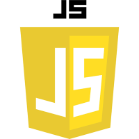

HTML

Aqui estamos aprendendo Negrito
Aqui estamos aprendendo Italico
Aqui estamos aprendendo Marcação
Texto Pequeno
Texto Inserido
329
H2O
Como diria o pai de uma amigo : O computador é um burro rápido
Gandalf farejou o ar e olhou para trás.O inverno se aprofunda atrás de nósdisse baixinho para Aragorn.
Estou lendo O senhor dos anéis
Você pode pesquisar no Google
HTML
CSS
Javscript
